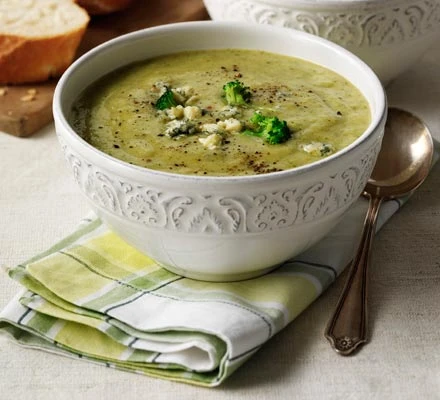

Broccoli & stilton soup

Description
A smooth, blended vegetable soup with blue cheese that's as good for a comforting meal as it is for a dinner party starter.
Ingredients
- 2 tbsp rapeseed oil
- 1 stick celery, sliced
- 1 leek, sliced
- 1 onion, finely chopped
- 1 medium potato, diced
- 1 knob butter
- 1l low salt or homemade chicken or vegetable stock
- 1 head broccoli, roughly chopped
- 140g stilton, or other blue cheese, crumbled
Steps
- Heat 2 tbsp rapeseed oil in a large saucepan and then add 1 finely chopped onion. Cook on a medium heat until soft. Add a splash of water if the onion starts to catch.
- Add 1 sliced celery stick, 1 sliced leek, 1 diced medium potato and a knob of butter. Stir until melted, then cover with a lid. Allow to sweat for 5 minutes then remove the lid.
- Pour in 1l of chicken or vegetable stock and add any chunky bits of stalk from 1 head of broccoli. Cook for 10-15 minutes until all the vegetables are soft.
- Add the rest of the roughly chopped broccoli and cook for a further 5 minutes.
- Carefully transfer to a blender and blitz until smooth.
- Stir in 140g crumbled stilton, allowing a few lumps to remain. Season with black pepper and serve.
>